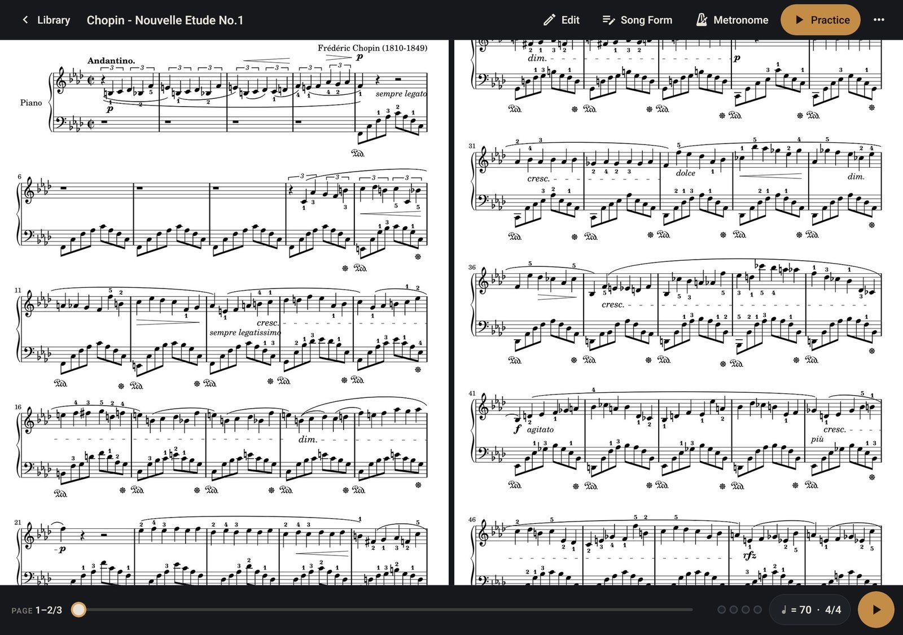
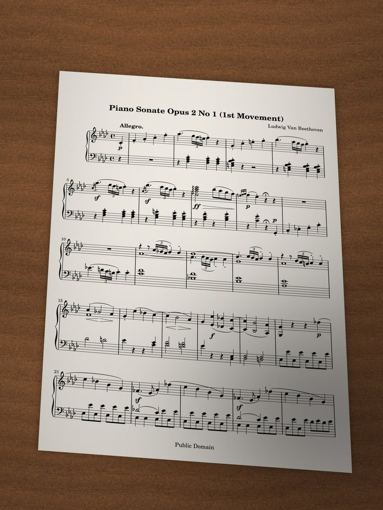
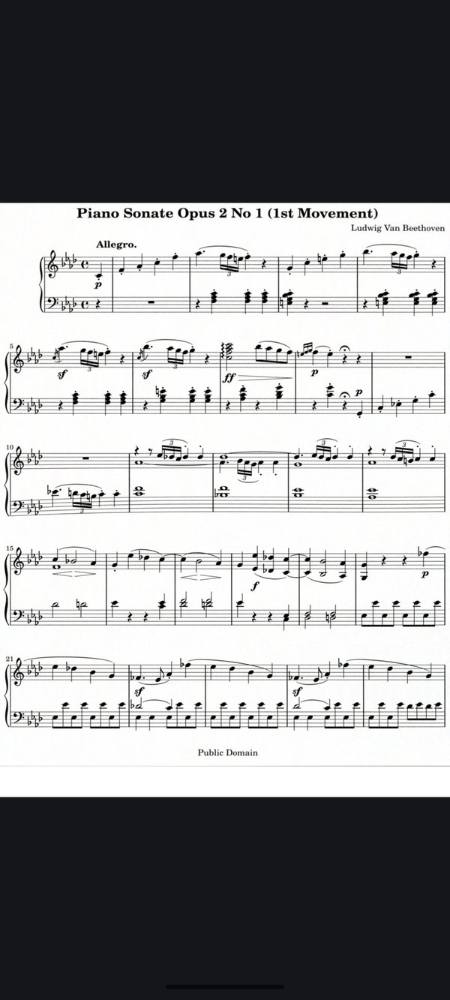
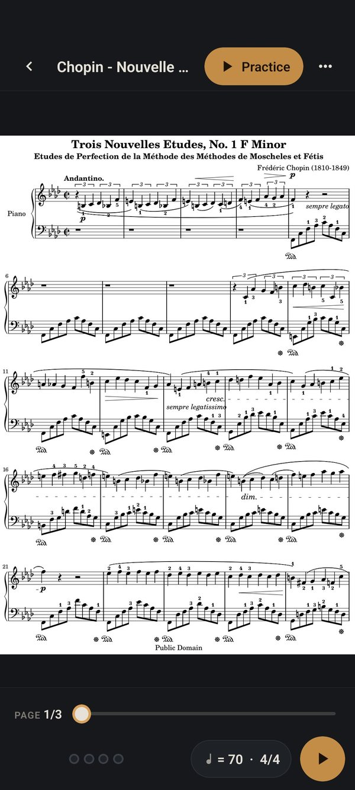
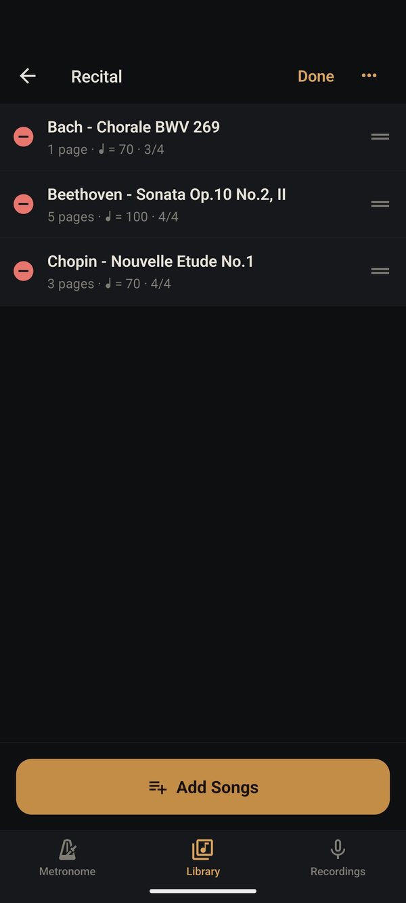
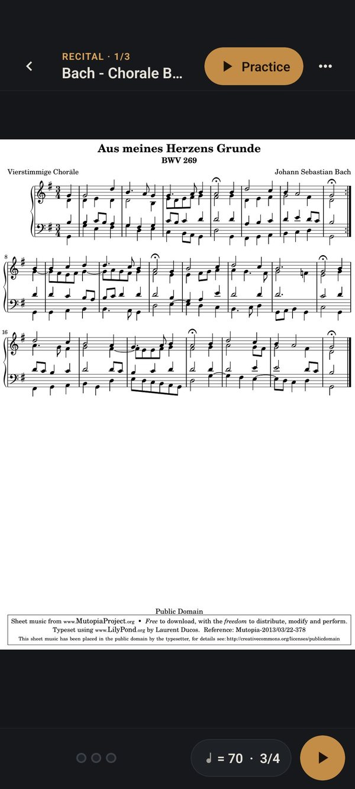
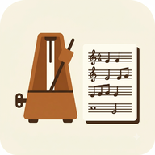

Sheet music that turns its own pages
Read your scores full screen, turn them with a tap or a pedal, or let MusicTools turn them in time with the metronome, marking the bar you're playing. Paper scores come in from a photo, straightened.

Free for now. MusicTools will become a paid app; download it now and you keep it.

What's new in 1.3.0
From reading the score to practicing it, in one app
- Scores from photos and scans, straightened by their staves
- A full-screen viewer with trimmed margins: tap, swipe or press a Bluetooth pedal to turn
- Setlists that roll on to the next piece past the last page
- Two ways to practice: Simple (just the metronome) or Auto page turn
- A tuner, play-along tracks with an A–B loop, page arranging, stamps and backups
Scores from photos
Snap a photo, get a straight page
Not everything you play is a PDF. Add Sheet takes photos from your library or a scan with the camera, as well as PDFs. Each photo is straightened by its staves: the angle you held the phone at, the curl of a book's page and the shadow of your hand are taken out, and every page comes out the same size, so the music doesn't jump around as you turn.
Before the song is made you can reorder the pages, turn them, set their corners by hand, or leave a page as photographed.

The photo
The viewer
Tap a song, the score fills the screen
Songs open on their score, edge to edge, with the white margins trimmed so the notes come out larger. The controls stay out of the way until you tap the middle. Tap the sides or swipe to turn a page, or use a Bluetooth page-turner pedal.
- Two pages side by side on an iPad in landscape, like an open book
- Every song opens on the page you left it on
- The screen stays on while you read

Setlists
Setlists that roll on to the next piece
Put songs in the order you play them: a daily practice routine, a recital program, Sunday's set. Turn past the last page of one piece and the next one opens at its first page, so a pedal takes you through the whole program.


Auto page turn
Pages that turn in time
Auto page turn counts you in, marks the bar you're on as it fills beat by beat with the clicks, and turns each page the moment its last bar ends. When you import a PDF, MusicTools finds the bars and reads repeat signs and 1st and 2nd endings for you; mark D.C., D.S., codas, tempo and meter changes, ritardandos and fermatas on their bars and it follows those too.
Rather turn the pages yourself? Simple practice puts the song's metronome over the score.
And more
Everything practice needs, on the device
A tuner
In the Metronome tab, with A anywhere from 415 to 466 Hz.
A metronome that reads the score
Tempos as written (dotted quarter = 60), 7/8 counted as 3+2+2, accents per beat, four sounds.
Play along
Attach a recording or an audio file to a song, slow it down, loop a passage from A to B.
Write on the score
Pen, highlighter, text and stamps for fingerings and dynamics. The original PDF stays untouched; share or print with your notes.
Record your practice
Keeps recording with the screen off; comes back if the app closes. Listen back at half speed.
Hum to MIDI
Hum a melody and get a MIDI file for your DAW or notation app. Experimental.
Arrange pages
Reorder, turn, remove or add pages; your notes and Song Form follow them.
Open PDFs from anywhere
From Files, Mail or Safari straight into MusicTools.
Nothing leaves your device
No account, no ads, no data collected. Reading scores and straightening photos happen on the device.
Questions
Good to know
Is it free?
Yes, for now, with no ads and no account. MusicTools will become a paid app, and if you download it before then you keep it: the App Store never charges you again for an app you already have.
Does it listen to me play?
No. It follows the tempo, not the microphone, so it works best when you practice with the click. Mark tempo changes, rit. and fermatas on their bars and it follows those too. For rubato, use Simple and turn the pages yourself.
Which pedals work?
Bluetooth page-turner pedals that connect as a keyboard, which most do. In the viewer they turn pages; in Auto page turn they start and pause.
What kind of scores can I use?
PDFs, photos and camera scans. Bars and repeats are read best from cleanly printed scores; anything the app can't read, you set up in the Song Form editor.
Which devices?
iPhone and iPad with iOS 16.4 or later. On a music stand, an iPad's larger screen is the most comfortable.
Android?
In testing now.

Get MusicTools while it's free
It will become a paid app. Download it now and you keep it, on iPhone and iPad.